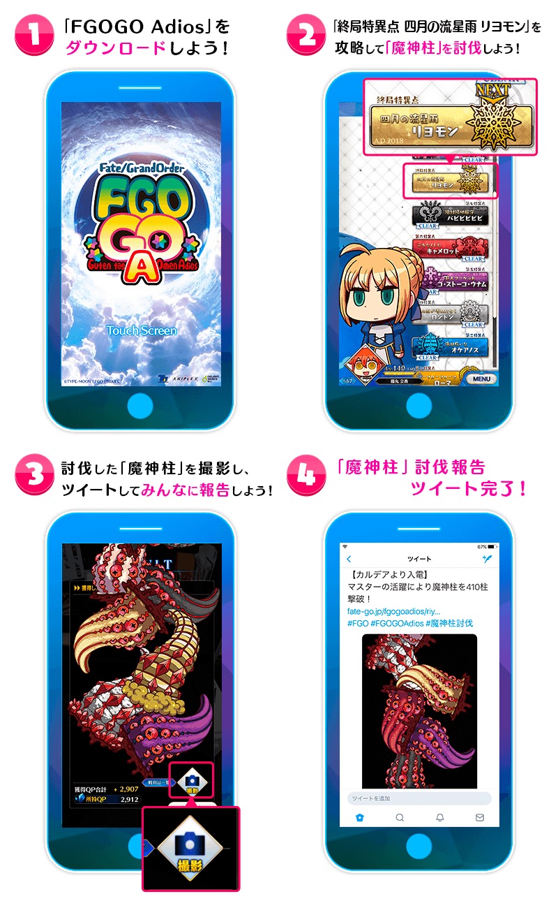

【4月1日(日) 23:00追記】
討伐「魔神柱」報告的推特數達成42,000，平安迎來四月二日！
為了記念，向對象者全員贈送概念禮裝「春遠からじ」！
◆領取期間◆
2018年4月1日(日) 23:00～4月2日(一) 22:59
◆贈送對象◆
所有的Master對象
※新Master玩家必須在4月2日(一) 22:59前通過至「特異點F 炎上汙染都市 冬木 第3節」。
◆四月二日奪回記念概念禮裝「春遠からじ」◆
【4月1日(日) 17:00刊載】
◆公開時間◆
2018年4月1日(日) 17:00～
◆最終決戰，終於開幕◆
「終局特異點 四月的流星雨 Riyo門」
跨越許多困難後在前方等候的是，最後的考驗。
討伐「魔神柱」報告的推特數超越42,000時，四月二日將平安修復。
靠Master全員討伐「魔神柱」，奪回四月二日吧。
◆「終局特異點」開放條件◆
通過「第七特異點 絕對截止嚴守 巴比比比比比」後開放。
◆「終局特異點」通過條件◆
討伐「魔神柱」能進行的「討伐報告推特(標籤#魔神柱討伐)」的投稿合計數，只限在4月1日(日) 22:59前超越42,000的話，才能通過。
◆「魔神柱」的討伐方法◆
